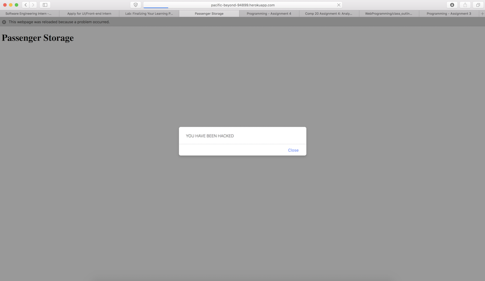
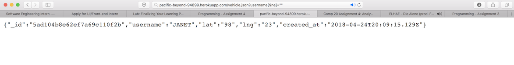
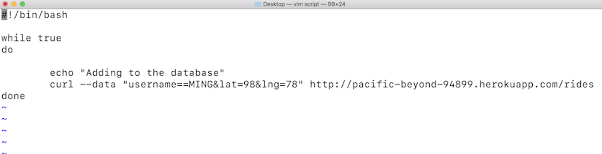
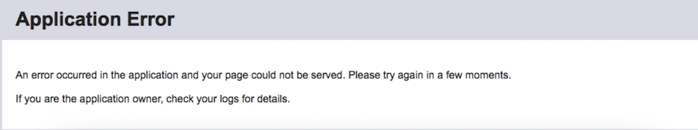

In this report, I describe certain security vulnerabilities found in Ziwe Chen's API and code for Assignment 3. The site for assignment 3 displays a list of checkins by people who have sent an HTTP POST request to the site with their username, latitude, and longitude. The purpose of this assignment is to attack the website from all angles, by using a number of tools to compromise the functionality of Ziwe's website. I will then suggest ways to improve the security of his website.
Vulnerabilities come in many different forms. We define a vulnerability as anything an outsider can do to affect the expected behavior of the web application. For example, outsiders (such as myself) should not be able to change the appearance of the page, crash the site for all users, or overload the database with bogus data.
I started by inspecting the website, using the JavaScript console to see what sorts of things I can change on the front end. I then started using curl on the command line to see if I could inject scripts into the database to be rendered and executed on the front end.
After attacking the site from an outsider's point of view, I then went on to search for logical flaws in the code, and ways I could manipulate the database while running the API locally. Though I tested the database manipulations locally, I have little doubt that the database injections would have had the same behavior on the Heroku app.
The primary issue with the checkins web API is that the developer has put too much faith in the user. If the user follows all the rules and does not send unexpected input, then the API works like a charm. However, malicious users can easily use certain tools, like curl, Burp Suite, or even just the browser address bar to manipulate the expected behavior of the site.
/rides checkin site.
POST data to the /rides API, the server does not escape special characters, which can easily result in unwanted <script> tags. The browser will execute these scripts, potentially resulting in an unusable webpage for clients. These attacks can range from playfully malicious to very malicious:
 The above is a mild attack against the website. One can think of many other potential curl requests with scripts that could cripple the site, and even the user's browser.
function escapeHtml(post_param) {
return post_param
.replace(/&/g, "&")
.replace(/</g, "<")
.replace(/>/g, ">")
.replace(/"/g, """)
.replace(/'/g, "'");
}
/rides API, the server does not allow non-numerical values for 'lat' and 'lng'. This is a good thing, except for the fact that the server returns an Internal Server Error rather than a 400 error. However, the input is still inserted into the database, and appears in the root API after POSTing. The type of error should be specified by the status. In this case, the error is the client's problem (invalid input), and thus should fall in the 400 range. This could be resolved by ensuring that the lat and lng are numbers before inserting into the database.
/vehicles.json GET API.
/vehicles.json API accepts a query string parameter, which is supposed to contain the username for a vehicle and returns info about that vehicle if it is in the database. Unfortunately, the API does not check for whether or not the query parameter is an object or not, allowing for Mongo-style queries to get through to the database. The URL http://pacific-beyond-94899.herokuapp.com/vehicle.json?username[$ne]="" returns all database documents in the user database, since every document has a username 'not equal' to an empty string. In this case, only one vehicle is in the collection as of now, so only one vehicle is being shown.

if (typeof request.query.username === "object") {
response.send(400);
return;
}
/rides API using this command.  Eventually, this resulted in a database overload, giving the 'Application Error' message on Heroku. The application has no way to ensure that large queries or large numbers of queries don't break the application.

if (username.length >= 100 || lat.length >= 100 || lng.length >= 100) {
response.send(400);
}
db.collection('passengers').update(criteria, {upsert: true}). This way the server can reject numerous data insertions from the same user if entered one after the other.
Overall, the client's site contains many vulnerabilities that can easily be fixed by simply checking and blocking malicious user input. By following the recommendations that I have suggested above, the client can easily avoid many of the most common issues that arise when deploying sites on the World Wide Web. I recommend taking the precautions listed above, and then investing in a more detailed investigation into the security vulnerabilities of the site. In conlcusion: "You never ever trust a user's input!"